Montaje y pulido de niveles
Carlos León
cleon@ucm.es
Sesión 1
Profesor
- Carlos León <cleon@ucm.es>
- Profesor FdI
- Docencia MVJ: Refuerzo programación, arquitectura UE, prácticas diseño de niveles, tutor de proyectos
- Videojuegos, Creatividad Computacional y Sistemas Cognitivos
- Grupo de investigación NIL
- Despacho 444 FdI
Introducción y objetivos
Motivación
Uno de los roles más comunes en el diseño de videojuegos es el de creación de mapas/niveles, este módulo está pensado para reforzar vuestra habilidad como creadores de estos contenido
Objetivos
Saber crear de principio a fin niveles con una buena base técnica (objetivo, ideación, despliegue, comprobación…)
- Poner en práctica la teoría para crear niveles (y no solo mecánicas o lógica)
- Pulir nivel para jugabilidad y objetivos
- Hacer QA útil y aplicarlo
El nivel concreto
La ideación abstracta de mecánicas y dinámicas se vuelve concreta cuando hacemos nivel:
- Distancias
- Tiempo
- Objetos
- Enemigos
Niveles
- Un scroll lateral de saltos
- Un top-down dual-stick
- Un FPS
Las implementaciones disponibles ya os la damos hechas
No hace falta que cambiéis nada, pero no está prohibido
Están basadas en contenido core de UE para facilitar documentación y modificación
Grupos
Haremos las prácticas en grupos de 2 o 3 personas
Tenéis libertad para crear grupos, pero los equipos en los que se combine capacidad de programación con capacidad de diseño, generalmente, funcionarán mejor
Cómo hacer cada nivel
Ideación
Aparte del nivel implementado, un documento que describa:
- concepto y objetivo del nivel
- referencias en las que nos basamos
- las dinámicas buscadas
- las mecánicas con las que se intentan conseguir
- la estética con la que se comunica
- las métricas de nivel y juego (qué se va a medir)
Concepto de nivel
Ayuda mucho dar un concepto único de nivel:
- Objetivo de nivel: ¿para qué es este nivel?
- Idea base: ¿qué idea queremos desarrollar sobre él?
- Desafío base: ¿qué es difícil en el nivel?
- Evolución: ¿cómo es el desenlace del nivel?
Prototipo I
Implementación del MVP con las ideas principales
Si se van a introducir mecánicas, éste es el momento
Pruebas I
Los desarrolladores no sirven como sujetos de prueba
- ¿Está presente el concepto que buscamos?
- ¿Se cumple el objetivo de nivel?
- ¿Se trabajan obligatoriamente las mecánicas?
- ¿El jugador hacer lo que esperamos?
- ¿Se entiende lo que queremos expresar?
Las primeras pruebas deberían servirnos para descubrir cuál es el funcionamiento general del nivel con usuarios externos
Prototipo II
A partir de los datos de las "Pruebas I", generamos un nivel "feature complete", con todo lo que buscamos, aún sin pulir métricas
Pero preparado para sacar datos y pulir
Si se van a introducir elementos estéticos, lo ideal es hacerlo aquí
Pruebas II
- ¿La duración es apropiada?
- ¿El jugador muere las veces que buscamos?
- ¿Cuántas veces intenta el punto X?
- ¿Hay vida/balas/tiempo suficientes?
- ¿En qué puntos hay conflictos y el jugador se atasca?
Prototipo final
Todo terminado y pulido
Las variables tienen los valores ya ajustados, y hemos aplicado los cambios de las Pruebas I y II
Pruebas finales
El juego es "el ideal", y ahora vamos a comprobar que se cumplen
La conclusión tiene que ser:
He comprobado que en mi nivel ocurre lo que yo quería que ocurriera
Tras cada prototipo final, se hará una presentación del desarrollo en clase
Pruebas de esfuerzo y pruebas de gameplay
Dos tipos de pruebas:
- Intentando "romper" nivel o gameplay: speed run, no matar a nadie, escaparse, encontrar defectos
- Jugar de la manera más natural, sin intentar saltarse las normas
Ambos tipos de pruebas son importantes y necesarios, y nos dan información complementaria sobre el nivel
Notas de implementación
Mando
Aunque no es estrictamente necesario, se pueden traer mandos (gamepads) para probar los juegos, principalmente para el dual-stick
Edición de parámetros
Todos los parámetros de personajes, nivel y demás que se puedan usar para equilibrar están puestos en la categoría "Game" en UE
Entrega
- Información de los componentes del grupo
- El proyecto de UE con la implementación
- El informe final
Qué incluir en el informe final
- Resumen de diseño
- Mecánicas cambiadas
- Mapas en texto
- Plan de pruebas
- Ejecución de pruebas y resultados
- Datos de pruebas
- Resumen de experiencia con otros juegos
Y, en general, todo lo relevante y todo lo que hemos ideo apuntando
La idea es que la entrega sea el material que se ha hecho en clase (con algunas mejoras donde tenga sentido)
El objetivo es no quitaros más tiempo de lo necesario fuera de las sesiones
La entrega se hará 14 días después de la última sesión
Recordad: intentad enviar lo que se ha hecho en clase (lo podéis retocar después), no es necesario avanzar mucho más los niveles
Cómo crear los niveles
Whiteboxing (recordatorio)
Whiteboxing (también greyboxing, block out, brushes o brush actors) es el proceso de crear los volúmenes de un nivel, sin tener en cuenta los detalles (las mallas 3D)
Es el borrador de un nivel, en el que crearemos y experimentaremos con es espacio, distancias, tamaños, etc
Es una técnica muy buena para saber qué se quiere antes de "vestir" el nivel entero:
- Podremos iterar rápidamente (sin esperar al contenido artístico)
- Nos permite "aislarnos" de la parte estética
- Podemos probar las mecánicas y dinámicas
Whiteboxing en UE
Veamos algunos aspectos básicos para crear geometría en UE
(Más información en la documentación de UE)
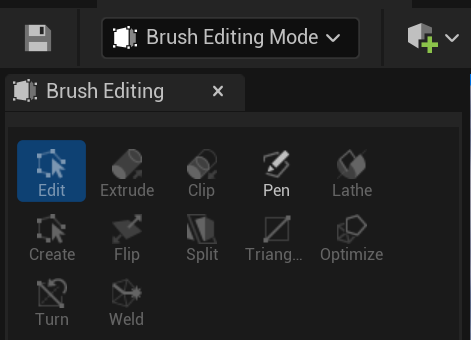
Figura 1: En UE se incluye la edición de geometry brushes (BSPs) como cualquier otro objeto de escena
Manipulación directa
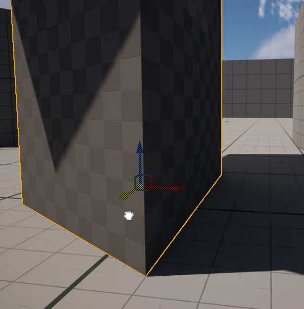
Figura 2: Los objetos de whiteboxing se pueden rotar, mover y escalar como cualquier Actor
Colisión
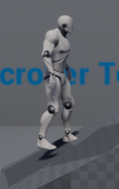
Figura 3: Los objetos tendrán, directamente, una malla de colisión que corresponderá a su geometría
Edición de geometría
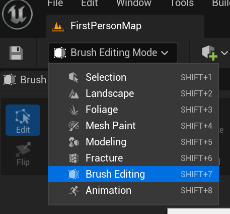
Figura 4: Podemos pasar al modo de edición de geometría a través del menú superior
A partir de UE5 tenemos Modeling Mode
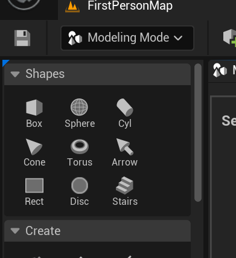
Figura 5: El modo de modelado es más potente que los brushes

Figura 6: Nos permite trabajar con mallas existentes
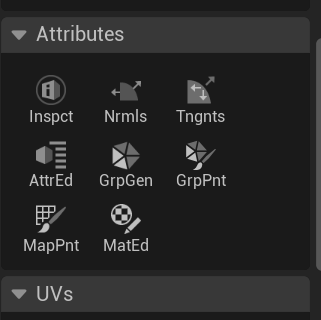
Figura 7: Para subdividir una malla PolyGroups o en caras "utilizables" (que no tienen por qué coincidir con los triángulos), usamos Attributes → GrpGen
Operaciones booleanas
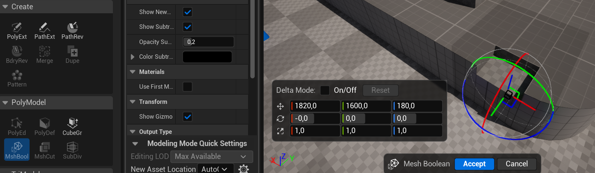
Figura 8: Las operaciones booleanas me permiten "sumar" o "restar"
Colores en whiteboxing
Es muy útil añadir colores (materiales) a los bloques para indicar su semántica. Por ejemplo:
- Verde: seguro
- Rojo: dañino
- Amarillo: objetivo
- Azul: objeto
Para colorear una malla, aunque sea hecha con la modeling tool, simplemente le agregamos un material
Terreno
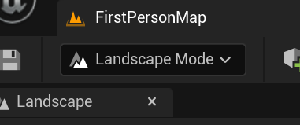
Figura 9: También es posible crear terreno ("landscape")
Elegimos las opciones y pinchamos en "Create"
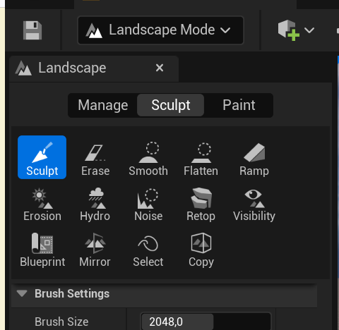
Figura 10: Y podemos "esculpir" el terreno de manera muy sencilla
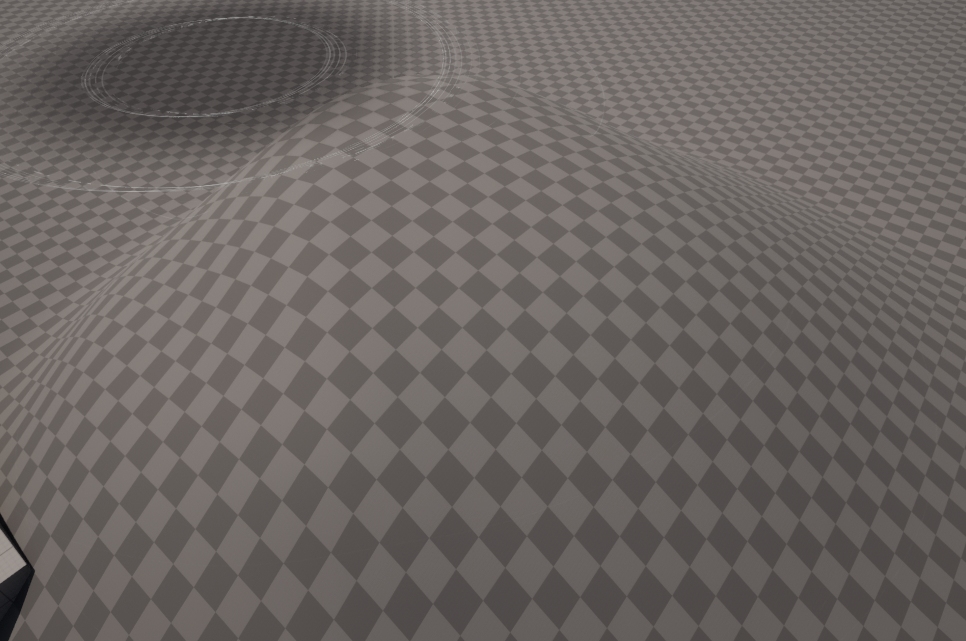
Figura 11: Y crear escenarios de forma muy flexible
Información adicional
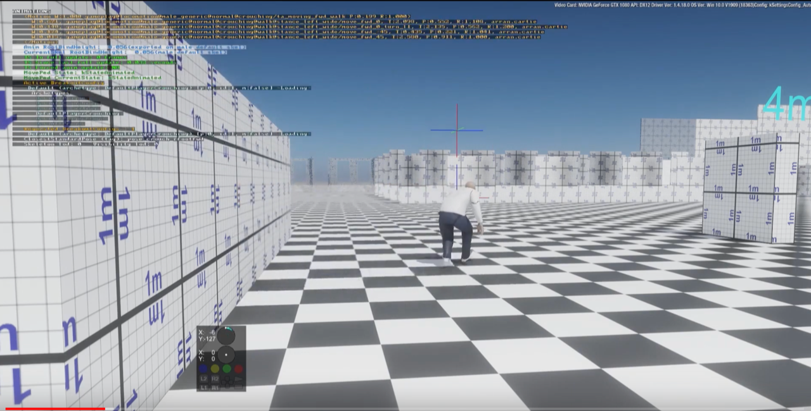
Figura 12: Es muy útil añadir distancias y elementos unitarios
Scroll lateral
Introducción
En esta parte se va a trabajar en la creación de un nivel para un juego de mecánicas clásicas y sencillas de arcade desplazamiento lateral
Sigue un sistema básico 2D en un nivel de desplazamiento abierto (se puede ir a cualquier parte dentro de la zona delimitada)
Celeste
- Exigencia muy alta de nivel
- Pero muy poco castigo al fallar
- Poca rejugabilidad (si tienes mucho nivel, el principio es muy fácil)
- Añade mecánicas + elementos de nivel
- Doble y triple "salto" buenos para corregir
Super Mario World
- SMW tiene infinidad de enemigos y mecánicas que van evolucionando
- Mucho contenido, mucho opcional (rejugabilidad de niveles)
- Habilidad de movimiento
- No hay doble salto, hay que hacerlo bien a la primera
- En general hay tiempo de sobra
Super Ghouls 'n Ghosts
- Salto sin movimiento: es importante, en un side-scroller, que nos podamos mover durante el salto. Es irreal, pero evita que tengamos que planificar un salto y da más velocidad al juego (y posibilidades)
- Hay un doble salto que permite corregir
- Añade disparo/mecánicas lucha
- Mecánicas muy constantes
Elementos y mecánicas de la práctica
Desplazamiento
Desplazamiento lateral sencillo (izquierda/derecha), a una velocidad parametrizable
Agacharse
El personaje puede agacharse, reduciendo su altura a un multiplicador (parámetro)
Salto
Salto sencillo, de altura parametrizable
Es posible añadir movimiento lateral al salto (es decir, cambiar la dirección en el aire), parametrizable respecto a la velocidad básica en el suelo
Varios saltos
En el atributo Possible jumps se puede cambiar el número de saltos que se pueden dar en el aire (1, 2, 3…)
Coger y lanzar objetos
Para cambiar la potencia de lanzamiento, se puede cambiar la variable Throw strength
Daño
Tenemos \(N\) puntos de vida (configurable como Life, puede ser que \(N=1\)), y el contacto con los enemigos que no daña nos resta puntos
El daño en configurable en el atributo Damage
Para cambiar la vida inicial, tenemos la variable Life (en el componente Damageable)
Caídas
Si caemos por un agujero, perdemos todos los puntos de vida y la partida se reinicia (blueprint Deep)
Gemas
Las gemas son coleccionables para el jugador
Se pueden usar como objetivo (maximizar gemas cogidas), o como condición para eventos
Pulsadores
Al ser tocados, un elemento del escenario desaparece (¿una barrera?)
Es configurable en el atributo Barrier
Vigía
El vigía va hacia derecha o izquierda hasta que se tope con un obstáculo (y entonces se da la vuelta) o hasta que caiga de una plataforma a otra inferior (y sigue moviéndose) o al vacío, y muere
Eliminar enemigos
Podemos eliminar enemigos de varias formas (cada golpe puede tener hacer distinto daño):
- Haciendo que caigan en trampas (ver Vigía)
- Lanzándoles objetos que les dañen
Cuando un enemigo es eliminado, desaparece de la escena
Fin del nivel
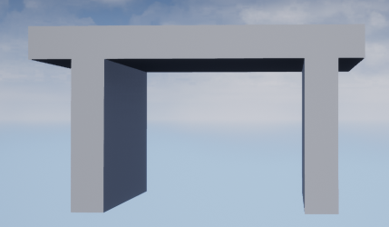
Figura 13: El nivel se acaba cuando llegamos al "portal de salida"
Habilidad
Buscamos un gameplay que explore la habilidad de control en los juegos
Objetivos
- Nivel "lineal" (no necesariamente la geometría, pero sí el desarrollo: no se pasa 2 veces por un sitio)
- No es necesario que todas las mecánicas se usen en el nivel
Cosas que poner en práctica
- Gestión de tiempo de nivel
- Bloqueo de avance con geometría/bloqueo
- Desafío y distancias salto/alcance, midiendo dificultad
- Ritmo desafío/descanso
- Muestra de desafío y solución (enseñar bloque y enemigo antes de resolver)
- Gestionar dificultad y castigo
- Dificultad: nivel requerido para superar un desafío
- Castigo: penalización por no superar el desafío
Opcional
- Doble salto (parametrizable con el atributo
Possible jumps)- Que el segundo salto sea más corto
- Es posible modificar, añadir o quitar mecánicas, pero siempre de forma justificada y consultándolo antes. El juego deberá ser fundamentalmente el mismo
- Hacer un nivel más largo, o más niveles
- Comparativa detallada con otros niveles de juegos con mecánicas comparables
- Que la velocidad del jugador dependa de si lleva o no un objeto
- Añadir tiempo (variables
TimeyHasTimeen el game mode)
Prototipo I, pruebas I
Sesión 2 (scroll lateral): Prototipo II, pruebas II
Sesión 3 (scroll lateral): Prototipo final, pruebas finales, presentación
Sesión 4: Dual-stick cenital
Zelda
- Mecánicas que avanzan y desbloquean mundo y gameplay
- Lucha sencilla, principalmente cuerpo a cuerpo: encuentros por áreas
- Ritmo lento, enfrentamiento basado estrategia
- Puzzle, laberinto, descubrimiento
Enter the Gungeon
- Armas y balas por todas partes
- Dificultad creciente
- Sensación arcade (si juegas muy bien, los recursos no importan tanto)
- Pulido muy detallado
- Generación de mapa
Hades
- Diferentes estilos de juego según armas (no hay armas en el nivel)
- Influencia de varios géneros (Diablo, roguelikes)
- Gestión de avance en mazmorra
- Economía de recursos y mejoras para avanzar
- Core loop moderno, con mejoras y narrativa
- Narrativa por profundidad de nivel
Gauntlet
- Pantalla compartida: tiene que haber sitio para todos
- "Infinitos" enemigos
- Spawners
- No hay munición, pero hay "comida" y "pociones"
- La vida es el recurso principal
Contenido y mecánicas
Descripción
Juego top-down, dual-stick en el que hay que atravesar una "mazmorra" de habitaciones
Movimiento
Movimiento WASD /palanca izquierda, se apunta con flechas de dirección o palanca derecha
Vida
Tenemos una serie de puntos de vida, como en el juego de scroll lateral
El daño funciona de la misma manera
Al recibir daño, hay un pequeño empuje configurable en PushDamage
Armas
Tenemos varias armas posibles
Arma básica
El arma normal tiene poca potencia y tiene munición infinita
Shotgun
(Todos los juegos necesitan una)
Cadencia de disparo baja, poca munición y ataque de dispersión
Machine Gun
Más munición, cadencia de disparo muy alta
Disparo y recarga
Hay munición global por cada arma, y munición en el cargador
Cuando se agota el cargador hay que recargar (activamente)
El tiempo de recarga (único para todas las armas) se encuentra en Recharging time
Cada arma hace un daño específico que puede configurarse en Weapon damage
En la clase del jugador hay varios Maps usados para configurar las armas:
MaxMagazine(las balas que caben en cada cargador)Weapon fire rate(cadencia de disparo por arma)Has(las armas que tiene)
Enemigos
Los enemigos se mueven a través de una malla de navegación (NavMesh)
Hacen un daño Damage done, en la clase Enemy (clase padre)
Zombie
Te persigue y hace daño cuerpo a cuerpo
Se mueve mediante un árbol de comportamiento (que os explicarán más adelante)
En ShootTask está Distance threshold para la distancia a la que ataca
También Attack period que es el tiempo entre ataques
En los zombies hay también un parámetro llamado Distancia de deteccion que permite establecer la distancia del personaje principal a la que se activan
Pinchos
Si los tocas, te hacen daño
Powerups
Se pueden coger un power-ups que cambia la velocidad (Speed thing) durante Super speed time segundos en Super speed quantity
Puertas cerradas
Solo se pueden abrir con una llave (ver más adelante)
Recursos
- Vida
- Llave
- Balas
Portal
El nivel se acaba en el portal, igual que en juego 2D
Objetivos
- Hacer un nivel por habitaciones
- Hacer una mazmorra sin habitaciones (todo seguido)
- Buscamos un gameplay en el que el jugador planee su movimiento y sus acciones, de forma más o menos inmediata (tenéis libertad para decidir)
Cosas que poner en práctica
- Layout inicial de enemigos por zonas
- Dinámica llave-puerta
- Comportamiento de enemigos: ¿cuándo atacan?
- Diferentes enemigos y combinaciones
- Despliegue de recursos vs. despliegue de desafíos
- Zonas opcionales
Opcional
- Power-ups de invulnerabilidad y de potencia de disparo (u otras cosas)
- Dash
- Más enemigos
- Tipos de llaves
- Más armas (cuerpo a cuerpo, por ejemplo)
- Habitaciones/nivel procedimental
Prototipo I, pruebas I
Sesión 5 (dual stick): Prototipo II, pruebas II
Sesión 6 (dual stick): Prototipo final, pruebas finales, presentación
Sesión 7: Shooter en primera persona
DOOM
- Ritmo, batalla: pasillos y habitaciones
- Hay narrativa, pero secundaria (texturas, enemigos)
- Arquitectura sin realismo, hay arcade
- Recursos: muchas balas, muchas armas
- Se juega a "matar bichos"
- Poca evolución de mecánicas: evolución de nivel
Might and Magic
- Mapa es fundamental (mazmorras)
- Versiones evolucionan hacia "FPS", pero mantiene rol: adaptación al movimiento
- Al desaparecer turnos, el descanso del jugador está en el mapa (ya no puedo esperar)
Halo
- "30 seconds of fun"
- Dinámicas de combate complejas y muy depuradas: mapa acompaña
- Mecánicas adicionales (conducir, torretas), bien posicionadas
- Tipos de armas para enemigos, hay recursos por el mapa y en los enemigos
- Diseño detallado de terreno y enemigos
Half-Life
- Flexibilidad de armas, pero cada arma está pensada para un enemigo
- No hay demasiada munición (pero sí de sobra)
- Puzzles
- Entorno y narrativa potentes
- Juego con saltos y físicas
Skyrim
- El control ya no es preciso en cuerpo a cuerpo
- Aparece control preciso "lento" con arco
- Relación mundo/personaje que elimina arcade y crea exploración
- Fusión 1ª/3ª persona (mismas mecánicas porque no importa precisión)
Portal
- Reinvención de puzzles en 1ª persona
- Físicas y ritmo lento
- Juego de cámara e información constante
- Niveles puzzle muy complejos que funcionan en 1ª persona
Juego
Las mecánicas van a ser las mismas que en el top-down, pero esta vez en primera persona
De hecho, puede ser interesante reutilizar las mecánicas que posiblemente hayáis añadido y comparar
El jugador aquí podrá también saltar (pero aquí no tiene más de un salto)
Pasar elementos de un proyecto a otro en UE
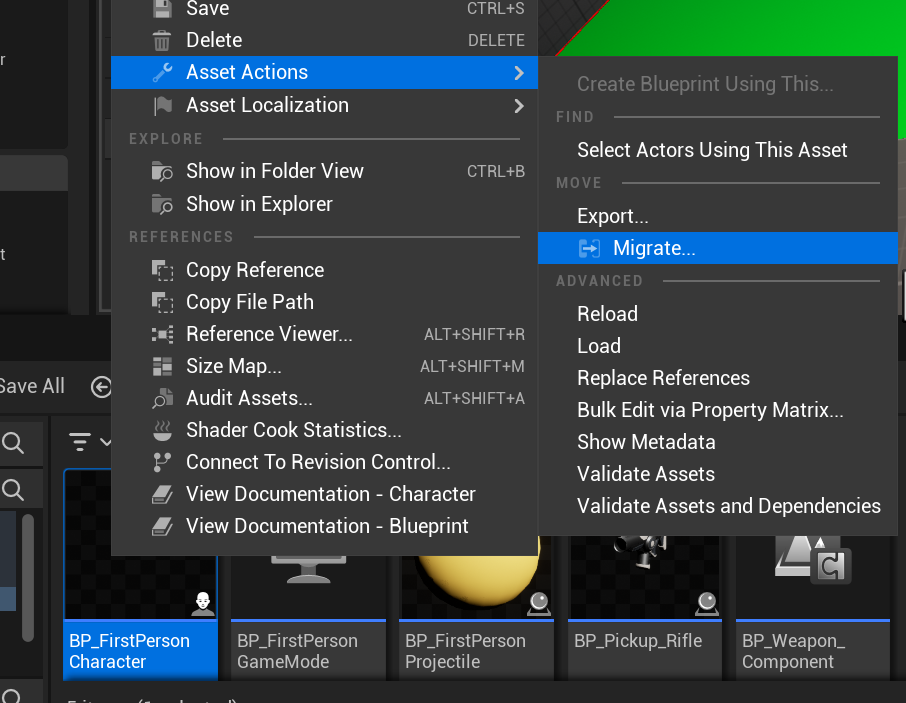
Figura 14: Se pueden migrar uassets entre proyectos
Narrativa
Las historias
El valor de las historias en la experiencia de un videojuego es (como en casi todo) muy grande
Por tanto, vamos a contar, en nuestro nivel, una historia
Personajes no jugador (NPCs)
En el proyecto hay ahora un blueprint NPC
Este componente tiene una componente de tipo TextRender que contiene un atributo Text que se mostrará cuando el jugador "hable" con el actor
Además, el texto se activa automáticamente cuando estamos a menos de Talking distance (distancia, en el personaje principal) y el texto dura Show time segundos en pantalla (en el NPC)
Enlazar geometría e historia
Vamos a usar un esquema clásico principio-nudo-desenlace (aunque si encontráis una razón buena para otro esquema, adelante)
La geometría tiene que encajar con la narrativa contada
QA en la narrativa
- ¿Se entiende la historia?
- ¿Emociona la historia? ¿Qué emoción?
- ¿Mejora la experiencia? ¿Cómo?
- Preguntad por la percepción de tiempo, ritmo y evolución con y sin historia
Objetivo
- Hacer un nivel FPS
- El escenario será continuo, pero habrá 3 "zonas" o entornos diferentes
- Nos faltarán modelos para diferenciar el entorno, pero lo sustituiremos con formas geométricas claras (bouba y kiki)
- Información y percepción del entorno
- ¿Cómo informamos a nuestro jugador?
- ¿Cómo le ocultamos información?
Cosas que poner en práctica
- Línea de visión
- Geometría "realista", tamaños y espacios plausibles
- Flujo de acción con geometría
- Equilibrado acción-descanso (checkpoints)
- Guiado del personaje
- NPCs
- Narrativa
Comparación 2D-3D
- ¿Cómo cambian los valores entre primera persona y top-down?
- ¿Cómo cambia la percepción del entorno?
- ¿Gestión de enemigos y ataque?
- ¿Me pierdo?
- ¿Funciona la misma geometría?